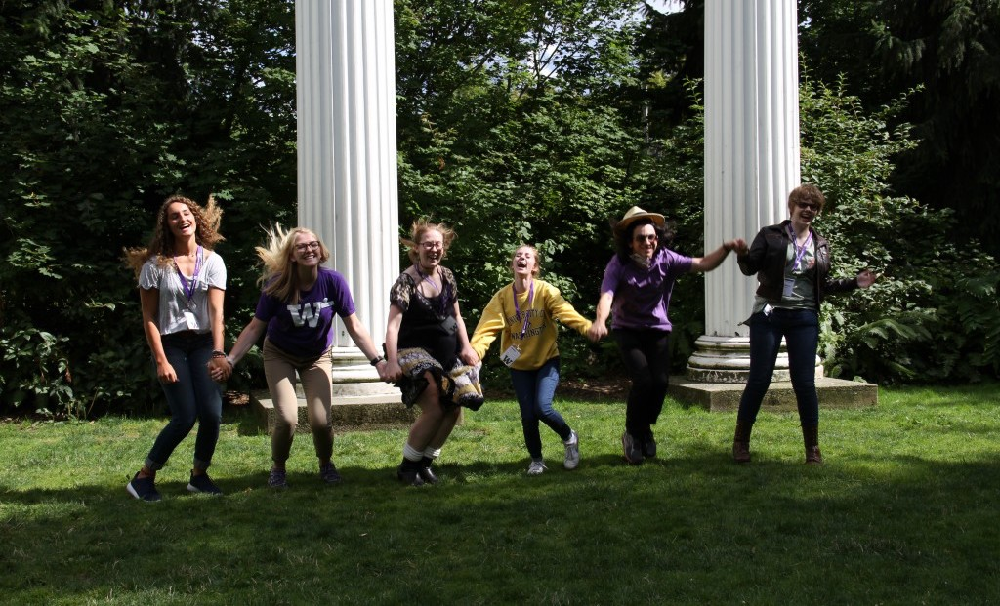

About
In her 2018 letter to the student body, UW President Anna Marie Cauce stated: "We are all responsible for understanding what sexual harassment is, taking action to prevent it from occurring, and knowing how to respond if it does occur." UW has taken many measures to help UW student survivors, such as in-person, customized staff training, running the SafeCampus initiative, and more.
However, there are improvements to be made. UW needs to enhance education and outreach, better assess our university climate on the issues of sexual violencew and harassment, and further clarify employee responsibilities in preventing and responding to relevant incidents.
This platform, dedicated to our survivors at UW, seeks to address these points. We offer features such as Anonymous Live Chat, Sexual Harassment Awareness Training Module, and Blogposts for the survivors to hear and share their stories and truly feel the sense of belonging to the community here at UW.
